Sonarqube
Sonarqube¶
Installation:
- I followed this guide to install and start Sonarqube in localhost with port 9000
- I created a SonarScanner tool in Jenkins as shown in this guide
- To configure Sonarqube with jenkins I followed those steps, except for the Jenkinsfile sh commands, for that I followed this except for configuring sonar-project.properties file because for that I based on internet stuff and official documentation of Sonarqube.
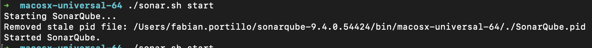
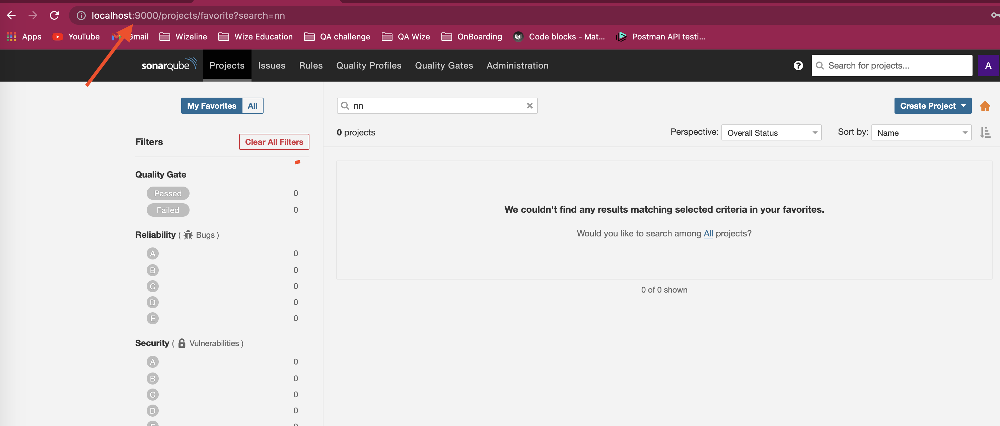
Sonarqube configuration:¶
- Create project: Create project > manually > Write name 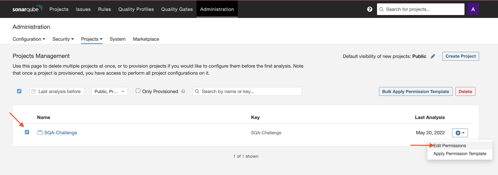
- Enable scan code with sonar without force user credentials: Administration > Security > Force user authentication (disable) 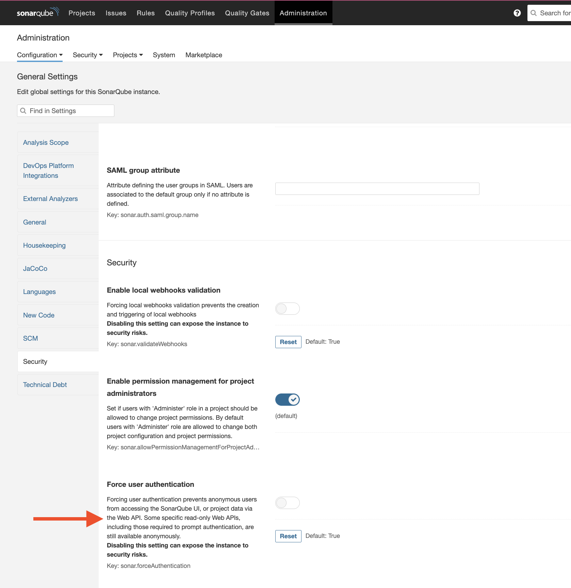
- Set permissions to the project: Administration > Project > Management > 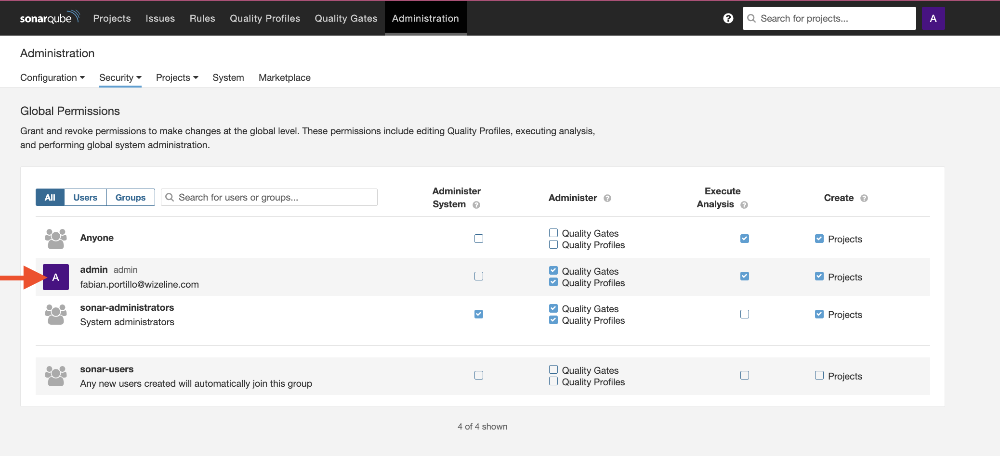
-
Quality Gates: Quality Gates > create > "name"
4.1 Add condition: You can create new conditions according of your needs and choose if you want to apply to "On new code" or "overall code".
4.2 Grant permissions to the previous user you created to link it to this Quality Gate. 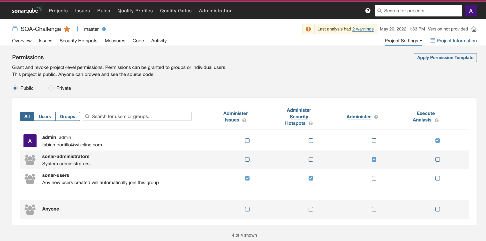
Quality Gates 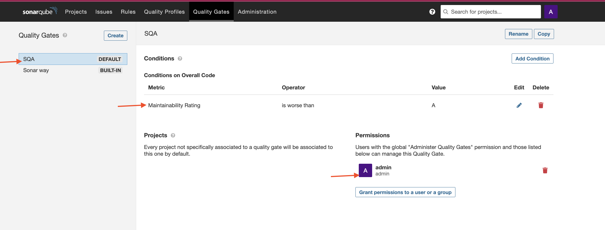 5. You can choose if select as default the new Quality Gate you created or select the one with name "Sonar Way" with the default metrics already has.
Jenkins configuration¶
- Plugin: Verify if Sonarqube plugin is already installed. 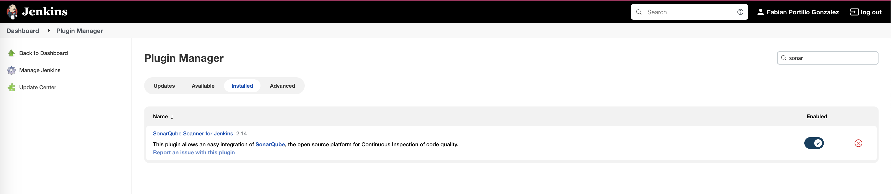
- SQ server: Manage > Configuration > SonarQube servers > add 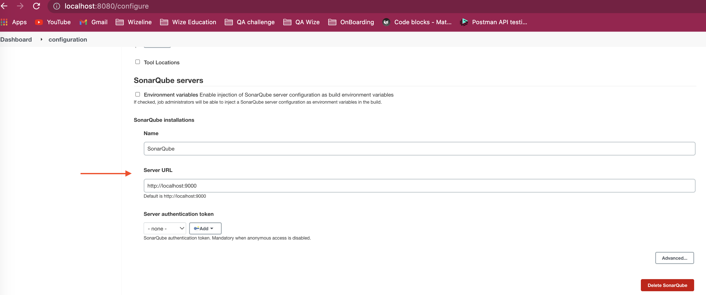
- SQ scanner: Manage > Global Tool Configuration > SonarQube Scanner > add 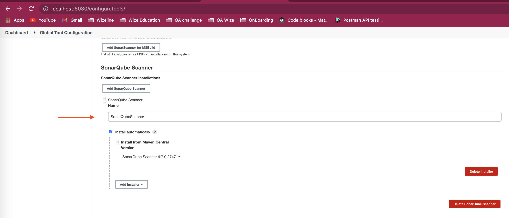
Jenkinsfile¶
This is how it looks the stages for Sonarqube:
stage('Static Analysis - Sonarqube') {
environment {
SCANNER_HOME = tool 'SonarQubeScanner'
PROJECT_NAME = 'SQA-Challenge'
}
steps {
echo 'running Sonarqube..'
echo "${SCANNER_HOME}"
withSonarQubeEnv('SonarQube') {
sh '''
${SCANNER_HOME}/bin/sonar-scanner \
-Dsonar.projectKey="${PROJECT_NAME}"
'''
}
}
}
stage('Quality Gate - Sonarqube') {
steps {
echo 'waiting for QualityGate Sonarqube..'
waitForQualityGate abortPipeline: true
}
}
Results¶
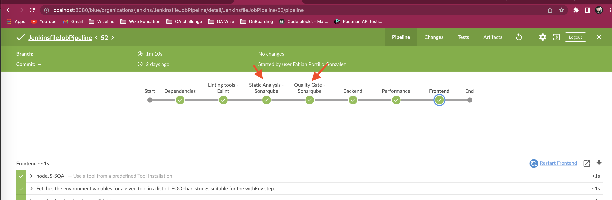